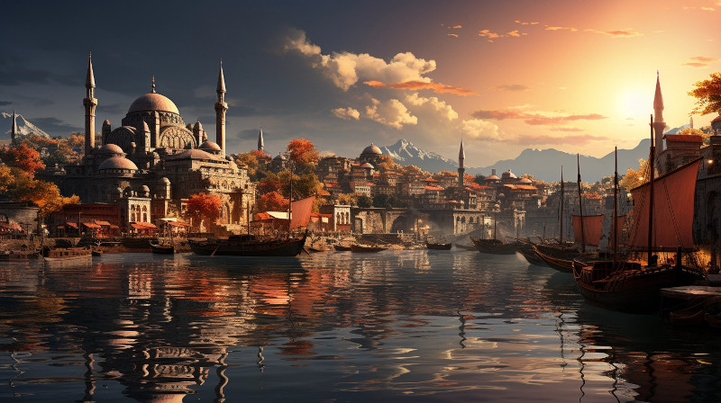

Figure 1: Ponte Cidade, the gleaming capital of the Gran Imperio
In the heart of Naurrnen lies the Gran Imperio, often referred to as the “human empire.” However, it’s a realm that defies easy classification, as it embodies true pluralism and inclusivity, welcoming various races and cultures within its borders. This mighty empire is characterized by a relatively robust monarchy that governs its diverse populace.
The capital city of Ponte Cidade stands as a remarkable testament to the empire’s strategic location. Nestled at the crossroads between Elven territories and the lands of men, it serves as a bustling hub where trade routes stretch from the western reaches of Elven lands to the far eastern deserts inhabited by ground-dwelling races. Ponte Cidade is the pulsating heart of commerce in Naurrnen, where merchants, scholars, and adventurers converge to exchange goods, ideas, and knowledge.
Just beyond the city’s boundaries lies the prestigious University of Naethanor, an institution of higher learning renowned for its rigorous academic programs in trade, philosophy, and various other fields of study. It is a place where aspiring scholars from across Naurrnen gather to expand their horizons and engage in intellectual discourse.
Several hundred kilometers to the south of Ponte Cidade, one finds the awe-inspiring Ornasion library, a citadel of knowledge unparalleled in its grandeur. Ornasion is the largest library in all of Naurrnen, housing an extensive collection of texts, manuscripts, and scrolls from various ages and civilizations. Within its hallowed halls, seekers of wisdom and enlightenment can delve into the vast reservoir of human and non-human knowledge, uncovering the secrets of history, magic, and philosophy.
The Gran Imperio is a realm where the pursuit of knowledge and the exchange of goods thrive side by side, fostering a unique synergy between trade and academia. Its dynamic culture, influenced by the diverse races that call it home, makes it a place of vibrant exchange and opportunity in the world of Naurrnen.